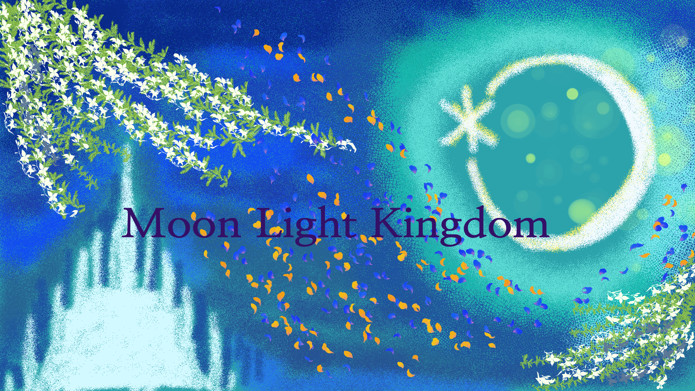

UPCOMING
FACE 2027
公募展への出品予定
- EXHIBITION
- FACE 2027
- DATE
- 選考後に掲載
- VENUE
- 会場情報は選考後に掲載
- ARTWORK
- 出品作品情報は選考後に掲載

A Portfolio of Paintings and Poetry by Waterland. See more..
水彩画や詩を描いています
、、何故、ジウ＝ユリイカは夕あかりの国の伝説の英雄となり、義理の妹であったカイ＝ユリイカと 結ばれたのでしょう、？ ジウはたとえ妹であろうと、その人を心から愛し、またその人に愛されるなら、、それが真実の愛で あるならば、なにものも恐れない王子でした。愛する人はカイ＝ユリイカその人だけだ、、という 強い想いがありました。。
、、ところが、何も知らなかった父王・海星王により、カイ＝ユリイカは隣国の王子・茜＝ユリイカの 王妃にされてしまいます。茜王と結婚した証として、改名させられ、今の名、カイ＝ユリイカと なったのです。命名式に一瞬姿を現したカイは全身黒色の衣を纏っていたといいます。茜王はカイを 大切に扱わなかったため、見るに見かねたジウ＝ユリイカにより討ち取られ、ジウはカイを救った 伝説の英雄となり、その後王位を継ぎ、カイと結ばれたのちにカイとともに月あかりの国を建国した というおはなしが残されています。。
月あかりの国で紡ぐ詩。
EXHIBITION
作品が生まれ、誰かと出会う場所 Waterlandの展示・出品記録をご紹介します。
UPCOMING
公募展への出品予定